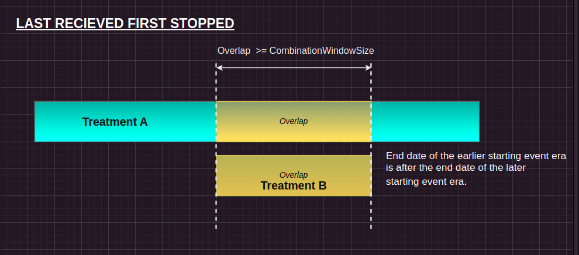

GSoC ’24: Developing Tooling for Observational Health Research in Julia
Hi Everyone! 👋
I am Jay Sanjay, and I am pursuing a Bachelor’s degree in Computational Sciences and Engineering at the Indian Institute of Technology (IIT) in Hyderabad, India. Coming from a mathematics and data analysis background, I was initially introduced to Julia at my university lectures. Later, I delved more into the language and the JuliaHealth community - an intersection of Julia, Health Research, Data Sciences, and Informatics. Here, I met some of the great folks in JuliaHealth and I decided to take it on as a full-fledged summer project. In this blog, I will briefly describe what my project is and what I did as a part of it.
You can find my GSoC project archive link
You can also find the related publication of my work on Zenodo
If you want to know more about me, you can connect with me on LinkedIn and follow me on GitHub
Background
What Is Observational Health Research?
Observational Health Research refers to studies that analyze real-world data (such as patient medical claims, electronic health records, etc.) to understand patient health. These studies often encompass a vast amount of data concerning patient care. An outstanding challenge here is that these datasets can become very complex and grow large enough to require advanced computing methods to process this information.
What Are Patient Pathways?
Patient pathways refer to the journey that patients with specific medical conditions undergo in terms of their treatment. This concept goes beyond simple drug uptake statistics and looks at the sequence of treatments patients receive over time, including first-line treatments and subsequent therapies. Understanding patient pathways is essential for analyzing treatment patterns, adherence to clinical guidelines, and the disbursement of drugs. To analyze patient pathways, one would typically use real-world data from sources such as electronic health records, claims data, and registries. However, barriers such as data interoperability and resource requirements have hindered the full utilization of real-world data for this purpose.
So to address these challenges we (the JuliaHealth organization and I) want to develop a set of tools to extract and analyze these patient pathways. These sets of tools are based on the Observational Medical Outcomes Partnership (OMOP) Common Data Model, which standardizes healthcare data to promote interoperability.
Project Description
As part of this project with JuliaHealth, I developed a new package called OMOPCDMPathways.jl. This package is designed for deployment in research projects, particularly those related to health and medical data analysis. This project takes much inspiration from the paper TreatmentPatterns: An r package to facilitate the standardized development and analysis of treatment patterns across disease domains [1] and explores the implementation of some of those ideas to develop new tools within the JuliaHealth Observational Health Subecosystem for exploring patient pathways. Additional new features and approaches were added and explored within this project. Additionally, I have authored a developer guide for the package, providing instructions on its use and contribution. This project provided me with hands-on experience in developing production-level code and exposed me to open-source software development practices. I had the opportunity to work in a team, under my mentors, and ensured the integration of the package with the rest of JuliaHealth, facilitating its adoption and usability within the community.
Project Goals
As a part of the development, I was majorly engaged in crafting the following functionalities:
Selecting treatments of interest: The first decision that was made was to decide the time from which the desired treatments of interest should be included in the treatment pathway study. Here the periodPriorToIndex specifies the period (i.e. number of days) before the index date from which treatments should be included.
Find Treatment History of Patients: Create the treatment history of a patient based on target, event, and exit cohorts. Then filter patient events based on the start and end dates of the target cohort. Third, Calculate the duration of treatment eras and the gap between treatments.
Filters: Filter the treatment history based on the minEraDuration parameter and EraCollapse parameter.
Create a Continuous Integration and Continuous Development pipeline for the package.
Implement the combinationWindow function, which combines treatments with various overlapping strategies.
Additionally, we had a few stretch goals which were:
Composing with JuliaStats Ecosystem
Novel Visualizations for Pathways
Tasks
1. Setting Up the Package in JuliaHealth Channel
Initially, there was no package as such for generating pathways, so I had to build it from scratch. First, I created the repository with the name OMOPCDMPathways.jl. Once the repository was created, we needed to have a skeleton for a standard Julia repository. For this, we used the PkgTemplates.jl this provided a basic skeleton for the repository that included - folders for test suites, documentation, src code files, GitHub files, README and LICENSE file, TOML and citation files. All this we can further edit and modify as per our work. By default, PkgTemplate.jl uses Documenter.jl for the documentation part but as suggested and discussed with my mentor we decided to shift to DocumenterVitepress.jl for the documentation part. However, we still faced some deployment issues in the new documentation due to a few mistakes in the make.jl file, thanks to Anshul Singhvi for helping fix the Deployment issues with DocumenterVitepress. With this, we were ready with the documentation set up and fully functional. After we had shifted to DocumenterVitepress the main task now was to host the documentation, this was done using Github-Actions, detailed steps for hosting are provided at this page. Then we added the CodeCov to our package by triggering it via a dummy function and a corresponding test case for it. Also, the CI for the package was set up with it. And, now finally the repository was ready with test coverage, CI, and documentation fully functional repository ready. Here’s some snapshots of the documentation set-up:

Initial documentation with Documenter.jl

New documentation using DocumenterVitepress.jl
So, as a part of it, I created this documentation which provides detailed steps for converting docs from Documenter to DocumenterVitepress.
2. Loading the PostgreSQL Database
The main database we worked on/built analysis was the freely available OMOPCDM Database. The Database was formatted within a PostgreSQL database with installation instructions here are some instructions on how to set up Postgres in a Linux machine. However, I was provided with some more extra synthetic data from my mentor for further testing of the functionalities. Being a very large database we had to strategically download it further, my mentor helped me in setting up the Postgres on my local machine. Once, the database was set up proper testing was performed on it to check if things were as expected. With this, we were done with the database setup as well and could finally dive into the actual code logic for the Pathways synthesis.
3. Testing and Development setup on my local computer
To get a proper environment for functionality creation and concurrent testing we required a proper testing setup so that we could test the new functions made at the same time. This was done using Revise.jl, which helps to keep Julia sessions running without frequent restarts when making changes to code. It allowed me to edit my code, update packages, or switch git branches during a session, with changes applied immediately in the next command. My mentor helped me set it up, added Revise.jl to the global Julia environment, also PackageCompatUI that provides a terminal text interface to the [compat] section of a Julia Project.toml file, and finally made a Julia script by the name “startup.jl” out of it. This script was then added to /home/jay-sanjay/.julia/config/ path in my local computer.
Here is the sample for the startup.jl file:
using PackageCompatUI
using PkgTemplates
using Revise
###################################
# HELPER FUNCTIONS
###################################
function template()
Template(;
user="jay-sanjay",
dir="~/FOSS",
authors="jaysanjay <jaysanjay@gmail.com> and contributors",
julia=v"1.6",
plugins=[
ProjectFile(; version=v"0.0.1"),
Git(),
Readme(),
License(; name="MIT"),
GitHubActions(; extra_versions=["1.6", "1", "nightly"]),
TagBot(),
Codecov(),
Documenter{GitHubActions}(),
Citation(; readme = true),
RegisterAction(),
BlueStyleBadge(),
Formatter(;style = "blue")
],
)
end4. Selecting Treatments of Interest
So, as a part of this, we used the previously mentioned research paper and discussion with the mentors we came up with logic for it. The first thing to do was to determine the moment in time from which selected treatments of interest should be included in the treatment pathway. The default is all treatments starting after the index date of the target cohort. For example, for a target cohort consisting of newly diagnosed patients, treatments after the moment of first diagnosis are included. However, it would also be desirable to include (some) treatments before the index date, for instance in case a specific disease diagnosis is only confirmed after initiating treatment. Therefore, periodPriorToIndex specifies the period (i.e. number of days) before the index date from which treatments should be included. We have created two dispatches for this function. After that proper testing and documentation are also added.
A basic implementation for it is:
Construct a SQL query to select cohort_definition_id, subject_id, and cohort_start_date from a specified table, filtering by cohort_id.
The SQL query construction and execution was done using the FunSQL.jl library, in the below-shown manner:
sql = From(tab) |>
Where(Fun.in(Get.cohort_definition_id, cohort_id...)) |>
Select(Get.cohort_definition_id, Get.subject_id, Get.cohort_start_date) |>
q -> render(q, dialect=dialect)Executes the constructed SQL query using a database connection, fetching the results into a data frame.
If the DataFrame is not empty, convert cohort_start_date to DateTime and subtract date_prior from each date, then return the modified DataFrame.
This was then be called this:
period_prior_to_index(
cohort_id = [1, 1, 1, 1, 1],
conn;
date_prior = Day(100),
tab=cohort
)5. Filters Applied
After this, we where needed to get the patient’s database filtered more finely so that there are minimal variations that can be ignored. The duration of the above extracted event eras may vary a lot and it can be preferable to limit to only treatments exceeding a minimum duration. Hence, minEraDuration specifies the minimum time an event era should last to be included in the analysis. All these implementations were more of Dataframe manipulation where I used DataFrames.jl package.
After that proper testing and documentation are also added.
A basic implementation for the minEraDuration is: It filters the treatment history DataFrame to retain only those rows where the duration between drug_exposure_end and drug_exposure_start is at least minEraDuration. This function can be used as follows:
#| eval: false
calculate_era_duration(test_df, 920000)
#= ... =#
4×3 DataFrame
Row │ person_id drug_exposure_start drug_exposure_end
│ Int64 Float64 Int64
─────┼───────────────────────────────────────────────────
1 │ 1 -3.7273e8 -364953600
2 │ 1 2.90304e7 31449600
3 │ 1 -8.18208e7 -80006400
4 │ 1 1.32918e9 1330387200Another filter we worked on is the EraCollapse. So, let’s suppose a case where an individual receives the same treatment for a long period of time (e.g. need for chronic treatment). Then it’s highly likely that the person would require refills. Now as patients are not 100% adherent, there might be a gap between two subsequent event eras. Usually, these eras are still considered as one treatment episode, and the eraCollapseSize deals with the maximum gap within which two eras of the same event cohort would be collapsed into one era (i.e. seen as a continuous treatment instead of a stop and re-initiation of the same treatment). After that proper testing and documentation are also added.
A basic implementation for the eraCollapseSize is: (a) Sorts the data frame by event_start_date and event_end_date. (b) Calculates the gap between each era and the previous era. (c) Filters out rows with gap_same > eraCollapseSize.
These functions can be used as follows:
#| eval: false
#= ... =#
EraCollapse(treatment_history = test_df, eraCollapseSize = 400000000)
4×4 DataFrame
Row │ person_id drug_exposure_start drug_exposure_end gap_same
│ Int64 Float64 Int64 Float64
─────┼───────────────────────────────────────────────────────────────
1 │ 1 -5.33347e8 -532483200 -1.86373e9
2 │ 1 -3.7273e8 -364953600 1.59754e8
3 │ 1 -8.18208e7 -80006400 2.83133e8
4 │ 1 2.90304e7 31449600 1.09037e86. Treatment History of the Patients
The create_treatment_history function constructs a detailed treatment history for patients in a target cohort by processing and filtering event cohort data from a given DataFrame. It begins by isolating the target cohort based on its cohort_id, adding a new column for the index_year derived from the cohort’s start date. Then, it selects relevant event cohorts based on a provided list of cohort IDs and merges them with the target cohort on the subject_id to associate events with individuals in the target group. The function applies different filtering criteria depending on whether the user is interested in treatments starting or ending within a specified period before the target cohort’s start date (defined by periodPriorToIndex). It keeps only the event cohorts that match the filtering condition, ensuring that only relevant treatments are considered. After filtering, the function calculates time gaps between consecutive cohort events for each patient, adding these gaps to the DataFrame. The final DataFrame provides a history of treatments, including the dates of events and the time intervals between them, offering a clear timeline of treatment for each patient. After that proper testing and documentation are also added.
7. CombinationWindow Functionality To Combine Overlapping Treatments
Now once we have the filtering of the treatments done, we need to combine the overlapping treatments based on some set of rules. The combinationWindow specifies the time that two event eras need to overlap to be considered a combination treatment. If there are more than two overlapping event eras, we sequentially combine treatments, starting from the first two overlapping event eras.
The combination_Window function processes a patient’s treatment history by identifying overlapping treatment events and combining them into continuous treatment periods based on certain rules. It first converts event_cohort_id into strings and sorts the treatment data by person_id, event_start_date, and event_end_date. The helper function selectRowsCombinationWindow calculates gaps between consecutive treatments, marking rows where treatments overlap or occur too closely. In the main loop, the function checks these overlaps and gaps against a specified combinationWindow. If treatments overlap (or nearly overlap), the function adjusts the treatment periods by either merging adjacent rows or splitting rows to create continuous treatment periods. The process continues until all overlapping treatments are combined into one, creating an updated and accurate treatment history. The function ensures the final output reflects realistic treatment windows by handling special cases where gaps between treatments are smaller than the treatment durations themselves.
It mainly covers the three cases mentioned in the R-research paper:
Switch Case:
Condition: If the gap between the two treatment events is smaller than the combinationWindow, but the gap is not equal to the duration of either event. Action: The event_end_date of the previous treatment is set to the event_start_date of the current treatment. This effectively “shifts” the previous treatment’s end date to eliminate the gap, merging the treatments into one continuous period. Purpose: This ensures that treatment gaps that are too small (less than combinationWindow) are treated as part of the same treatment window.
#| eval: false
#= ... =#
if -gap_previous < combinationWindow && !(-gap_previous in [duration_era, prev_duration_era])
treatment_history[i-1, :event_end_date] = treatment_history[i, :event_start_date]Here is the pictorial representation for the same: 
FRFS (First Row, First Shortened):
Condition: If the gap is larger than or equal to the combinationWindow, or the gap equals the duration of one of the two treatments, and the first treatment ends before or on the same date as the second treatment. Action: A new row is created where the second treatment’s event_end_date is set to the end date of the first treatment. This preserves the overlap but ensures that the earlier treatment period stays intact. Purpose: This prevents unnecessary truncation of the first treatment if it spans the entire overlap window.
#| eval: false
#= ... =#
elseif -gap_previous >= combinationWindow || -gap_previous in [duration_era, prev_duration_era]
if treatment_history[i-1, :event_end_date] <= treatment_history[i, :event_end_date]
new_row = deepcopy(treatment_history[i, :])
new_row.event_end_date = treatment_history[i-1, :event_end_date]
append!(treatment_history, DataFrame(new_row'))Here is the pictorial representation for the same: 
LRFS (Last Row, First Shortened):
Condition: If the gap is larger than or equal to the combinationWindow, or the gap equals the duration of one of the treatments, and the first treatment ends after the second treatment. Action: The current treatment’s event_end_date is adjusted to match the event_end_date of the previous treatment. Purpose: This handles cases where the second treatment’s window should be shortened to prevent overlap with the previous treatment, merging them into a single continuous window.
#| eval: false
#= ... =#
else
treatment_history[i, :event_end_date] = treatment_history[i-1, :event_end_date]Here is the pictorial representation for the same: 
Note: However, There are a few things left to cover here, most of which are the documentation and writing the test suite for the same.
Contributions Beyond Coding
1. Organizing Meetings and Communication
Throughout the project, I regularly met with my mentor, [Jacob Zelko], and co-mentor, [Mounika], via weekly Zoom calls to discuss progress and seek guidance. During these meetings, we reviewed my work, identified areas where I needed help, and set clear goals for the upcoming weeks. We used Trello to organize and track these goals, ensuring that nothing was overlooked. My mentors provided detailed insights into specific technical aspects and guided me through the logic behind various functions. Outside of our scheduled meetings, they were always available for quick queries via Slack, ensuring constant support.
2. Personal Documentation
In addition to the notes from our meetings, I maintained personal documentation where I recorded every step I took, including the challenges I faced and the mistakes I made. This helped me reflect on my progress and stay organized throughout the fellowship. Following my selection for GSoC 2024, I also published a blog post on Medium to share my journey and experiences with the Julia Language community.
3. Contributions To the Rest of the JuliaHealth Repositories
Earlier I have contributed a lot to the OMOPCDMCohortCreator.jl including adding new functionalities writing test suites, adding blogs including - Patient Pathways within JuliaHealth. Apart from that I also initiated 3 new releases of this package.
Conclusions and Future Development
This project was a 350-hour large project since there were many goals to accomplish. Here is what we accomplished:
Built a new repository in JuliaHealth land dedicated especially to treatment pathways synthesis.
CI/CD for the Package and Documentation hosting.
All required basic functionalities required to build the pathways.
Documentation and test suites added for each.
Future work would include:
Finish this PR test-suites and documentation are remaining for this PR.
Apart from that, we would need to add a function that sews up all the functionalities of the package so that the user can run the complete pathways analysis by running just one function instead of running each of the functions manually.
Also, in the future, we would explore what statistical functionalities we would need to further explore pathways.
Then, we could explore how to compose JuliaHealth with packages from ecosystems like JuliaStats and JuliaDSP (for time series analysis) that are mentioned in this PR.
And finally work on creating novel visualizations for the Pathways. Commonly used visualizations for treatment pathways (such as sunburst or icicle plots) showing which patients fall under what treatment pathways could be developed as plotting recipes to visualize various aspects of a patient’s care pathway rapidly.
Acknowledgements 🙇♂️
Thank you for your continuous help and support throughout the fellowship. Note: This blog post was also written with the assistance of LLM technologies to help with grammar, flow, and spelling!
References
Citation
@online{sanjay_landge2024,
author = {Sanjay Landge, Jay},
title = {GSoC ’24: {Developing} {Tooling} for {Observational} {Health}
{Research} in {Julia}},
date = {2024-09-07},
langid = {en}
}